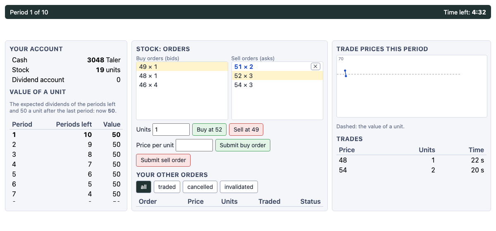

GIMS, the Graz-Innsbruck Market System (Palan, 2015), is a z-Tree program for asset market experiments: one generic market whose settings make it the market of many studies. jtree has a version of it, client/apps/gims, with GIMS's market rules and settings, and presets: configurations of published experiments, each with its source.

In each period traders buy and sell one or more assets for cash, in a continuous double auction, a call auction, or both, one after the other. After each period every unit pays a dividend, drawn for the market from a known distribution. A round (a market) lasts a number of periods; after its last, a unit is worth its buyback value. Around this, as settings:
- endowment types, assigned in equal numbers, and trader roles (buyers who can only buy, sellers who can only sell);
- dividends into cash or into an account apart from it; interest (or charges) on cash; cash given to traders after each period;
- short selling of assets and cash, holding caps (for some periods or all), purchase limits per period, fees for making and taking orders;
- GIMS's order book rules: single or multi-unit orders, the improvement rule, no crossing of the book, a limit on open orders, invalidation of orders no longer feasible (in full or in part), emptying the book after a trade, how many orders and prices are shown;
- the call auction's rules: orders per trader, market orders and their priority, indicative prices, rationing by time or at random;
- price forecasts, paid by accuracy; a vote to end a period early; practice periods with things to try; repeated markets, all paid or one at random; a minimum payment;
- control questions (with options, or numbers for answers), the cognitive reflection test and Holt and Laury's lottery choices, before or after the market;
- for the designs of the studies below: holding taxes; final values drawn for each market (with supplements, and an insider told one), with private signals or public news of them; values that follow a random path; a cash reserve for short positions; a book of depth one; announcements (fixed, drawn, or by the market); a chat before trading; bonds and an interest rate policy; a computerized firm that buys back or issues shares; a lottery ticket, an account status with the market's largest or smallest account, and a rating after each period; period lengths by round; endowment types drawn anew; cash carried from market to market; earnings as profits; one market paid from each block.
Running it
In the admin, start a session with gims/app.jtt (Browse panel), and choose its options:
- preset: the experiment, from the list below (
sswby default); - changes: settings to change, as JSON, over the preset's:
{"traders": 8, "tradingTime": 120}. This is GIMS's Settings stage.
Each preset has its number of traders: participants are put in markets of that many, in order (a session of 18 with ssw has two markets of 9). With "traders": 0 all participants trade in one market. Money is in points; the preset's exchange rate turns them into money, or the session's if the preset has none (several papers do not report theirs).
client/apps/gims/presets.js lists every setting, with its default and GIMS's name for it; a new preset is an entry there. The market engine is market.js, plain functions without jtree, and the app is app.jtt.
The presets
From the list of asset market experiments at sites.google.com/site/opowell/assetmarketexperiments: those whose design GIMS's market can run, and whose parameters could be read in the paper, a working paper, or a replication (cited in each). What is assumed, or left out, is said.
Not here: Noussair and Tucker (2006), whose design is a set of futures markets, and Palan (2010), whose is a market for digital options; Hussam, Porter and Smith (2008), Füllbrunn and Haruvy (2013), Shestakova, Powell and Gladyrev's study, Weitzel et al. (2020) and Breaban and Noussair (2015), whose parameters could not be read.
Smith, Suchanek and Williams (1988) (ssw). The standard design: 9 traders of three endowment types (225, 585 or 945 cents and 3, 2 or 1 units; each worth 1305 at the start), 15 periods, a dividend of 0, 8, 28 or 60 cents each period and no value after the last, so that the fundamental value falls from 360 to 24. A unit at a time, and a period ends early if all vote to end it. The endowments and dividends are those GIMS takes as its defaults; the period length here (240 seconds) is that of later studies of this design (e.g. Eckel and Füllbrunn 2015). 9 traders, 15 periods, double auction.
Source: Smith, V. L., Suchanek, G. L. and Williams, A. W. (1988). Bubbles, crashes, and endogenous expectations in experimental spot asset markets. Econometrica 56(5), 1119–1151.
GIMS's defaults (gims). GIMS v8.4.2 as it comes: four assets traded at once, each with the dividends of Smith, Suchanek and Williams; three endowment types (225, 585 or 945 cash per asset, and 3, 2 or 1 units of each); multi-unit orders in steps of 0.01; 180 seconds of trading; the 3 best orders on each side and the last 4 prices shown. GIMS's treatment file has 1 period. all participants in one market, 1 period, double auction.
Source: Palan, S. (2015). GIMS — Software for asset market experiments. Journal of Behavioral and Experimental Finance 5, 1–14.
Noussair, Robin and Ruffieux (2001): constant fundamental value (noussair-robin-ruffieux-2001). The Purdue sessions: 10 traders (8 to 10), each with 10 units and 10,000; a practice period, then 15 periods of 3 to 5 minutes (240 seconds here). After each period a unit pays 36 or 4, or costs 24 or 16, equally likely, into an account apart from cash; after the last, a unit is worth 360, so the value is 360 throughout. Earnings: cash, 360 a unit, the dividend account, and 5400; 800 to the dollar. Trading was MUDA's, a unit at a time. 10 traders, 15 periods, double auction, 1 practice period.
Source: Noussair, C., Robin, S. and Ruffieux, B. (2001). Price bubbles in laboratory asset markets with constant fundamental values. Experimental Economics 4, 87–105.
Lei, Noussair and Plott (2001): no speculation (lei-noussair-plott-2001-nospec). The NoSpec sessions (as Tucker and Xu 2024 list them): 8 traders, half buyers with 7,200 francs and no units, who can only buy, and half sellers with 20 units and no cash, who can only sell; a practice period, then 12 periods of 4 minutes; dividends of 20 or 40, equally likely; 300 francs to the dollar. Dividends go to an account apart from cash, as in Tucker and Xu's replication; the paper's own bookkeeping of them is not reproduced from it. 8 traders, 12 periods, double auction, 1 practice period.
Source: Lei, V., Noussair, C. N. and Plott, C. R. (2001). Nonspeculative bubbles in experimental asset markets: lack of common knowledge of rationality vs. actual irrationality. Econometrica 69(4), 831–859.
Dufwenberg, Lindqvist and Moore (2005) (dufwenberg-lindqvist-moore-2005). Working paper 588 (IUI, 2003): 6 traders, half with 6 units and 200 cents, half with 2 units and 600 cents; a two-minute practice period, then four rounds (markets) of 10 two-minute periods, each paying a dividend of 0 or 20 cents, equally likely. Every round is paid. (In the paper, two or four traders of the fourth round are newcomers; here the same traders play all four.) 6 traders, 4 markets of 10 periods, double auction, 1 practice period.
Source: Dufwenberg, M., Lindqvist, T. and Moore, E. (2005). Bubbles and experience: an experiment. American Economic Review 95(5), 1731–1737.
Haruvy, Lahav and Noussair (2007): call market and forecasts (haruvy-lahav-noussair-2007). As Carlé, Lahav, Neugebauer and Noussair (2019) describe it: 9 traders, with 1, 2 or 3 units (three of each) and the rest of 652 francs in cash; four rounds of 15 periods, each a call market where each trader submits one bid and one ask (price and quantity), bids below asks; dividends of 0, 4, 14 or 30, equally likely (a value of 180 at the start). Before each period, traders forecast the price of every period left, paid for each forecast within 10, 25 or 50% of the price (50, 20 or 10, as Baghestanian et al. give HLN's rewards). The exchange rate is not given here. 9 traders, 4 markets of 15 periods, call market.
Source: Haruvy, E., Lahav, Y. and Noussair, C. N. (2007). Traders' expectations in asset markets: experimental evidence. American Economic Review 97(5), 1901–1920.
Kirchler, Huber and Stöckl (2012): declining value (kirchler-huber-stockl-2012-declining). The SSW markets of their working paper (Innsbruck 2009-26), the declining value of the study: 10 traders, half with 60 units and 1000 Taler, half with 20 units and 3000; two practice periods, then 10 periods of 120 seconds; a dividend of 0 or 10, equally likely, into cash, so that the value falls from 50 by 5 a period; orders of any size; 400 Taler to the euro. (The paper draws one dividend sequence in advance for all sessions; here they are drawn.) 10 traders, 10 periods, double auction, 2 practice periods.
Source: Kirchler, M., Huber, J. and Stöckl, T. (2012). Thar she bursts: reducing confusion reduces bubbles. American Economic Review 102(2), 865–883.
Kirchler, Huber and Stöckl (2012): declining value, gold mine (kirchler-huber-stockl-2012-goldmine). The declining-value market, with the asset called stocks of a depletable gold mine, the framing that reduced confusion and mispricing in the paper. 10 traders, 10 periods, double auction, 2 practice periods.
Source: Kirchler, M., Huber, J. and Stöckl, T. (2012). Thar she bursts: reducing confusion reduces bubbles. American Economic Review 102(2), 865–883.
Kirchler, Huber and Stöckl (2012): constant value and cash (T4) (kirchler-huber-stockl-2012-t4). Treatment T4, as Noussair and Tucker (2014) replicate it with KHS's program: 10 traders, half with 20 units and 3,000 Taler, half with 60 and 1,000; two practice periods, then 10 periods of 120 seconds; a dividend of −5 or +5, equally likely, into an account apart from cash, and 50 a unit after the last period, so the value is 50 throughout and the cash-to-asset ratio stays 1. No shorting or borrowing; 400 Taler to the euro. 10 traders, 10 periods, double auction, 2 practice periods.
Source: Kirchler, M., Huber, J. and Stöckl, T. (2012). Thar she bursts: reducing confusion reduces bubbles. American Economic Review 102(2), 865–883.
Kirchler, Huber and Stöckl (2012): constant value, rising cash (T2) (kirchler-huber-stockl-2012-t2). Treatment T2: as T4, with cash given to each trader after each period (444, 556, 714, 953, 1333, 2000, 3333, 6667, 20000 and 0), so that the cash-to-asset ratio rises from 1 to 19 (Noussair and Tucker 2014, table 2). 10 traders, 10 periods, double auction, 2 practice periods.
Source: Kirchler, M., Huber, J. and Stöckl, T. (2012). Thar she bursts: reducing confusion reduces bubbles. American Economic Review 102(2), 865–883.
Noussair and Tucker (2014): constant value, 20 times the cash (noussair-tucker-2014-20x). Treatment T4_20x: KHS's T4 with 20 times the cash, a cash-to-asset ratio of 20 throughout: half the traders with 20 units and 41,000 Taler, half with 60 units and 39,000. Paid in New Zealand dollars; the rate is not given here. 10 traders, 10 periods, double auction, 2 practice periods.
Source: Noussair, C. N. and Tucker, S. (2014). Cash inflows and bubbles in asset markets with constant fundamental values. University of Waikato working paper 03/14 (2014).
Lugovskyy, Puzzello, Tucker and Williams (2014): no cap (lugovskyy-puzzello-tucker-williams-2014). The Unconstrained treatment: 9 traders (7 to 12), each with 10 units and 10,000 francs; 15 periods (120 or 180 seconds; 180 here) with the dividends of Smith, Suchanek and Williams; a cognitive reflection test first, $2 a right answer; before each period, a forecast of the period's mean price, paid into an account apart from cash (at HLN's rewards, assumed here); 600 francs to the dollar (the US sessions). 9 traders, 15 periods, double auction.
Source: Lugovskyy, V., Puzzello, D., Tucker, S. and Williams, A. (2014). Asset-holdings caps and bubbles in experimental asset markets. Journal of Economic Behavior & Organization (Waikato working paper 13/12, 2012).
Lugovskyy, Puzzello, Tucker and Williams (2014): permanent cap (lugovskyy-puzzello-tucker-williams-2014-cap). The Permanent Cap treatment: no trader may hold more than 18 units (1.8 times the endowment), in every period. Otherwise as the Unconstrained treatment. 9 traders, 15 periods, double auction.
Source: Lugovskyy, V., Puzzello, D., Tucker, S. and Williams, A. (2014). Asset-holdings caps and bubbles in experimental asset markets. Journal of Economic Behavior & Organization.
Lugovskyy, Puzzello, Tucker and Williams (2014): short-term cap (lugovskyy-puzzello-tucker-williams-2014-short-cap). The Short-Term Cap treatment: the cap of 18 units is lifted at the start of period 9. 9 traders, 15 periods, double auction.
Source: Lugovskyy, V., Puzzello, D., Tucker, S. and Williams, A. (2014). Asset-holdings caps and bubbles in experimental asset markets. Journal of Economic Behavior & Organization.
Eckel and Füllbrunn (2015) (eckel-fullbrunn-2015). From the instructions in the online appendix: 9 traders, 18 units in all; a practice period, then 15 periods of 240 seconds; dividends of 0, 8, 28 or 60 tokens into cash; a unit at a time; before each period, forecasts of the price of every period left, 5 tokens for each within 10% of the price, 2 within 25%, 1 within 50%; 100 tokens to the dollar. The endowments are those of Smith, Suchanek and Williams (3, 2 or 1 units), assumed here; the appendix does not give the cash. 9 traders, 15 periods, double auction, 1 practice period.
Source: Eckel, C. C. and Füllbrunn, S. C. (2015). Thar SHE blows? Gender, competition, and bubbles in experimental asset markets. American Economic Review 105(2), 906–920.
Giusti, Jiang and Xu (2014): interest on cash, falling value (giusti-jiang-xu-2014-falling). Treatment F (sessions F1, F2): 10 traders, each with 4 units and 2000; 15 periods of 150 seconds; dividends of Smith, Suchanek and Williams; 10% interest on cash each period, and 72 a unit after the last period, so the value falls from 200 to 87. A unit at a time; a practice period. The exchange rate is not given here. 10 traders, 15 periods, double auction, 1 practice period.
Source: Giusti, G., Jiang, J. H. and Xu, Y. (2014). Interest on cash, fundamental value process and bubble formation: an experimental study. Bank of Canada staff working paper 2014-18.
Giusti, Jiang and Xu (2014): interest on cash, rising value (giusti-jiang-xu-2014-rising). Treatment R (sessions R1 to R3): as F, with 720 a unit after the last period, so the value rises from 355 to 676. 10 traders, 15 periods, double auction, 1 practice period.
Source: Giusti, G., Jiang, J. H. and Xu, Y. (2014). Interest on cash, fundamental value process and bubble formation: an experimental study. Bank of Canada staff working paper 2014-18.
Giusti, Jiang and Xu (2014): negative dividends and interest (giusti-jiang-xu-2014-negative). Treatment N (sessions N1 to N3): a holding cost of 0, 8, 28 or 60 a unit each period, a charge of 10% on cash, 500 a unit after the last period, and 50,000 in cash each: the value falls from 1503 to 529. 10 traders, 15 periods, double auction, 1 practice period.
Source: Giusti, G., Jiang, J. H. and Xu, Y. (2014). Interest on cash, fundamental value process and bubble formation: an experimental study. Bank of Canada staff working paper 2014-18.
Huber, Bindra and Kleinlercher (2019): constant value, rising cash (huber-bindra-kleinlercher-2019). The BASE treatment, run with GIMS: 8 traders, each with 20 units and 560 Taler; two practice periods, then 20 periods of 120 seconds; dividends of 1.20 or 1.60, equally likely, 5% interest on cash after trading, 100 Taler to each trader after each period, and 28 a unit after the last period, so the value is 28 throughout. Before each period, forecasts of the mean price this period and the next two, 50 Taler for each within 5%. 400 Taler to the euro. The chart's scale (their treatment variable) is not reproduced. 8 traders, 20 periods, double auction, 2 practice periods.
Source: Huber, J., Bindra, P. C. and Kleinlercher, D. (2019). Design-features of bubble-prone experimental asset markets with a constant FV. Journal of the Economic Science Association.
Baghestanian, Lugovskyy, Puzzello and Tucker: double auction (baghestanian-lugovskyy-puzzello-tucker-da). The Double Auction treatment: 9 traders, each with 10 units and 10,000 francs; 15 periods of 3 minutes with the dividends of Smith, Suchanek and Williams; a unit at a time, at most 10 units bought a period; a cognitive reflection test first ($2 a right answer); before each period, a forecast of its mean price (50, 20 or 10 francs within 10, 25 or 50%), paid apart from cash. The exchange rate (not given) is that of related US sessions, 600 francs to the dollar. 9 traders, 15 periods, double auction.
Source: Baghestanian, S., Lugovskyy, V., Puzzello, D. and Tucker, S. Trading institutions in experimental asset markets: theory and evidence (working paper).
Baghestanian, Lugovskyy, Puzzello and Tucker: call market (baghestanian-lugovskyy-puzzello-tucker-call). The Call Market treatment: as the double auction, with a closed-book call market each period: one buy and one sell order each (a quantity and a price), buy prices below sell prices; ties for the last units broken at random. Forecasts are of the market price. (Their price is the lowest that clears the market; GIMS's rule, used here, picks among the clearing prices by its own steps.) 9 traders, 15 periods, call market.
Source: Baghestanian, S., Lugovskyy, V., Puzzello, D. and Tucker, S. Trading institutions in experimental asset markets: theory and evidence (working paper).
Tucker and Xu (2024): one market (tucker-xu-2024-onemkt). The OneMkt baseline of their replication of Lei, Noussair and Plott: 8 traders, each with 10 units and 10,000 francs; 15 periods of 3 minutes; the dividends of Smith, Suchanek and Williams, into an account apart from cash. Paid in New Zealand dollars; the rate is not given here. 8 traders, 15 periods, double auction.
Source: Tucker, S. and Xu, Y. (2024). Nonspeculative bubbles revisited. Journal of Behavioral and Experimental Finance (Waikato working paper 1/24).
Tucker and Xu (2024): no speculation (tucker-xu-2024-nospec). Their NoSpec treatment: half the traders are buyers with 10,000 francs and no units, who can only buy; half are sellers with 10 units and no cash, who can only sell. Otherwise as OneMkt. 8 traders, 15 periods, double auction.
Source: Tucker, S. and Xu, Y. (2024). Nonspeculative bubbles revisited. Journal of Behavioral and Experimental Finance (Waikato working paper 1/24).
Haruvy and Noussair (2006): no short selling (NSS) (haruvy-noussair-2006-nss). 9 traders with the endowments of Smith, Suchanek and Williams (225, 585 or 945 tokens and 3, 2 or 1 units); a practice, then 15 periods of 4 minutes; dividends of 0, 8, 28 or 60 tokens; a cent a token. Traders who are short pay the dividends of the units they are short. No short sales. 9 traders, 15 periods, double auction, 1 practice period.
Source: Haruvy, E. and Noussair, C. N. (2006). The effect of short selling on bubbles and crashes in experimental spot asset markets. Journal of Finance 61(3), 1119–1157.
Haruvy and Noussair (2006): short up to 3 units (QL3) (haruvy-noussair-2006-ql3). 9 traders with the endowments of Smith, Suchanek and Williams (225, 585 or 945 tokens and 3, 2 or 1 units); a practice, then 15 periods of 4 minutes; dividends of 0, 8, 28 or 60 tokens; a cent a token. Traders who are short pay the dividends of the units they are short. A trader may be short at most 3 units. 9 traders, 15 periods, double auction, 1 practice period.
Source: Haruvy, E. and Noussair, C. N. (2006). The effect of short selling on bubbles and crashes in experimental spot asset markets. Journal of Finance 61(3), 1119–1157.
Haruvy and Noussair (2006): short up to 6 units (QL6) (haruvy-noussair-2006-ql6). 9 traders with the endowments of Smith, Suchanek and Williams (225, 585 or 945 tokens and 3, 2 or 1 units); a practice, then 15 periods of 4 minutes; dividends of 0, 8, 28 or 60 tokens; a cent a token. Traders who are short pay the dividends of the units they are short. A trader may be short at most 6 units. 9 traders, 15 periods, double auction, 1 practice period.
Source: Haruvy, E. and Noussair, C. N. (2006). The effect of short selling on bubbles and crashes in experimental spot asset markets. Journal of Finance 61(3), 1119–1157.
Haruvy and Noussair (2006): cash reserve of 100% (CR100) (haruvy-noussair-2006-cr100). 9 traders with the endowments of Smith, Suchanek and Williams (225, 585 or 945 tokens and 3, 2 or 1 units); a practice, then 15 periods of 4 minutes; dividends of 0, 8, 28 or 60 tokens; a cent a token. Traders who are short pay the dividends of the units they are short. Short positions of any size, as long as the trader keeps cash of the value of the units they are short, 24 × (16 − t) a unit. 9 traders, 15 periods, double auction, 1 practice period.
Source: Haruvy, E. and Noussair, C. N. (2006). The effect of short selling on bubbles and crashes in experimental spot asset markets. Journal of Finance 61(3), 1119–1157.
Haruvy and Noussair (2006): cash reserve of 150% (CR150) (haruvy-noussair-2006-cr150). 9 traders with the endowments of Smith, Suchanek and Williams (225, 585 or 945 tokens and 3, 2 or 1 units); a practice, then 15 periods of 4 minutes; dividends of 0, 8, 28 or 60 tokens; a cent a token. Traders who are short pay the dividends of the units they are short. Short positions of any size, as long as the trader keeps cash of 150% of the value of the units they are short. 9 traders, 15 periods, double auction, 1 practice period.
Source: Haruvy, E. and Noussair, C. N. (2006). The effect of short selling on bubbles and crashes in experimental spot asset markets. Journal of Finance 61(3), 1119–1157.
Haruvy and Noussair (2006): flexible cash reserve (FLX) (haruvy-noussair-2006-flx). 9 traders with the endowments of Smith, Suchanek and Williams (225, 585 or 945 tokens and 3, 2 or 1 units); a practice, then 15 periods of 4 minutes; dividends of 0, 8, 28 or 60 tokens; a cent a token. Traders who are short pay the dividends of the units they are short. As CR100, but the reserve is 200% of the value when the last trade price was below the value. 9 traders, 15 periods, double auction, 1 practice period.
Source: Haruvy, E. and Noussair, C. N. (2006). The effect of short selling on bubbles and crashes in experimental spot asset markets. Journal of Finance 61(3), 1119–1157.
Noussair and Powell (2010): peak (noussair-powell-2010-peak). 9 traders with 1, 2 or 3 units, three of each; a practice period (10 minutes in the paper), then four markets of 15 periods of 2 minutes; dividends of 0, 8, 28 or 60 francs into cash, and a holding tax of 48 francs a unit after the tax periods, so that the value rises by 24 a period while there are taxes and falls by 24 when there are none. Each type starts with 1305 francs at the value; every market is paid, 200 francs to the euro. Peak: taxes after periods 1 to 7, so the value rises from 24 to 192 in period 8 and then falls; endowments of 1281, 1257 and 1233 francs with 1, 2 and 3 units. (The paper's instructions say eight tax periods; the text, the formula and the endowments say seven.) 9 traders, 4 markets of 15 periods, double auction, 1 practice period.
Source: Noussair, C. N. and Powell, O. (2010). Peaks and valleys: price discovery in experimental asset markets with non-monotonic fundamentals. Journal of Economic Studies 37(2), 152–180.
Noussair and Powell (2010): valley (noussair-powell-2010-valley). 9 traders with 1, 2 or 3 units, three of each; a practice period (10 minutes in the paper), then four markets of 15 periods of 2 minutes; dividends of 0, 8, 28 or 60 francs into cash, and a holding tax of 48 francs a unit after the tax periods, so that the value rises by 24 a period while there are taxes and falls by 24 when there are none. Each type starts with 1305 francs at the value; every market is paid, 200 francs to the euro. Valley (sessions V3 to V5): taxes after periods 8 to 15, and 216 francs a unit after the last period, so the value falls from 192 to 24 in period 8 and then rises to 240; endowments of 1113, 921 and 729 francs with 1, 2 and 3 units. 9 traders, 4 markets of 15 periods, double auction, 1 practice period.
Source: Noussair, C. N. and Powell, O. (2010). Peaks and valleys: price discovery in experimental asset markets with non-monotonic fundamentals. Journal of Economic Studies 37(2), 152–180.
Corgnet, Kujal and Porter (2010): no messages (N) (corgnet-kujal-porter-2010-base). 9 traders, five with 2 units and 550 cents, four with 4 units and 180 cents; two markets of 15 periods, 180 seconds each in the first and 160 in the second; dividends of 0, 8, 28 or 60 cents. In period 10 of each market, a message says that five periods remain. No other messages (the baseline). A unit at a time is assumed here. 9 traders, 2 markets of 15 periods, double auction.
Source: Corgnet, B., Kujal, P. and Porter, D. (2010). The effect of reliability, content and timing of public announcements on asset trading behavior. Journal of Economic Behavior & Organization 76(2), 254–266.
Corgnet, Kujal and Porter (2010): random message (RH, RL) (corgnet-kujal-porter-2010-random). 9 traders, five with 2 units and 550 cents, four with 4 units and 180 cents; two markets of 15 periods, 180 seconds each in the first and 160 in the second; dividends of 0, 8, 28 or 60 cents. In period 10 of each market, a message says that five periods remain. In periods 3, 7 and 12, the message "The price is too high" or "The price is too low", one of them drawn (by a die in the paper) for the session. A unit at a time is assumed here. 9 traders, 2 markets of 15 periods, double auction.
Source: Corgnet, B., Kujal, P. and Porter, D. (2010). The effect of reliability, content and timing of public announcements on asset trading behavior. Journal of Economic Behavior & Organization 76(2), 254–266.
Corgnet, Kujal and Porter (2010): preset message, too high (H) (corgnet-kujal-porter-2010-high). 9 traders, five with 2 units and 550 cents, four with 4 units and 180 cents; two markets of 15 periods, 180 seconds each in the first and 160 in the second; dividends of 0, 8, 28 or 60 cents. In period 10 of each market, a message says that five periods remain. In periods 3, 7 and 12, the message "The price is too high". A unit at a time is assumed here. 9 traders, 2 markets of 15 periods, double auction.
Source: Corgnet, B., Kujal, P. and Porter, D. (2010). The effect of reliability, content and timing of public announcements on asset trading behavior. Journal of Economic Behavior & Organization 76(2), 254–266.
Corgnet, Kujal and Porter (2010): preset message, too low (L) (corgnet-kujal-porter-2010-low). 9 traders, five with 2 units and 550 cents, four with 4 units and 180 cents; two markets of 15 periods, 180 seconds each in the first and 160 in the second; dividends of 0, 8, 28 or 60 cents. In period 10 of each market, a message says that five periods remain. In periods 3, 7 and 12, the message "The price is too low". A unit at a time is assumed here. 9 traders, 2 markets of 15 periods, double auction.
Source: Corgnet, B., Kujal, P. and Porter, D. (2010). The effect of reliability, content and timing of public announcements on asset trading behavior. Journal of Economic Behavior & Organization 76(2), 254–266.
Corgnet, Kujal and Porter (2010): market-based message (A) (corgnet-kujal-porter-2010-market). 9 traders, five with 2 units and 550 cents, four with 4 units and 180 cents; two markets of 15 periods, 180 seconds each in the first and 160 in the second; dividends of 0, 8, 28 or 60 cents. In period 10 of each market, a message says that five periods remain. In periods 3, 7 and 12, "The price is too high" if the mean price of the period before was above the value, "The price is too low" if below. A unit at a time is assumed here. 9 traders, 2 markets of 15 periods, double auction.
Source: Corgnet, B., Kujal, P. and Porter, D. (2010). The effect of reliability, content and timing of public announcements on asset trading behavior. Journal of Economic Behavior & Organization 76(2), 254–266.
Fiedler (2011): an internet-based market (fiedler-2011). Run in Second Life, with Haruvy and Noussair's design and twice the endowments of Smith, Suchanek and Williams (6, 4 or 2 units and 450, 1170 or 1890 Linden dollars): 9 traders (8 or 9), 15 periods of 2 minutes, dividends of 0, 8, 28 or 60. 267 Linden dollars to the US dollar. A unit at a time is assumed here. 9 traders, 15 periods, double auction.
Source: Fiedler, M. (2011). Experience and confidence in an internet-based asset market experiment. Southern Economic Journal 78(1), 30–52.
Lahav (2011): a 200-period call market (lahav-2011). 9 traders, each with 6 units and 150 francs; 200 periods of a call market in which each trader submits one buy and one sell order (a price and a quantity); a dividend of 0 or 0.30, equally likely, so that the value falls from 30 by 0.15 a period. The price is the middle of the prices at which the most units trade (the median of the crossing of demand and supply in the paper); ties for the last units are broken at random; all orders are shown afterwards. 10 francs to the dollar. The time to submit orders and to see the results (30 and 8 seconds) is assumed here. 9 traders, 200 periods, call market.
Source: Lahav, Y. (2011). Price patterns in experimental asset markets with long horizon. Journal of Behavioral Finance 12(1), 20–28.
Schoenberg and Haruvy (2012): upward reference (AllUp) (schoenberg-haruvy-2012-up). 10 traders (8 to 10) with the endowments of Smith, Suchanek and Williams; two practice periods, then 15 periods of 180 seconds; dividends of 0, 8, 28 or 60 cents. After each period, a lottery ticket (6 cents for a 5% chance of 120, one draw for all), then an account status: cash and units at the period's best bid, and the largest account total in the market (upward reference). Then a rating of how one feels about one's account, on a 7-point scale. A cent a unit of currency. 10 traders, 15 periods, double auction, 2 practice periods.
Source: Schoenberg, E. J. and Haruvy, E. (2012). Relative performance information in asset markets: an experimental approach. Journal of Economic Psychology 33(6), 1143–1155.
Schoenberg and Haruvy (2012): downward reference (AllDown) (schoenberg-haruvy-2012-down). 10 traders (8 to 10) with the endowments of Smith, Suchanek and Williams; two practice periods, then 15 periods of 180 seconds; dividends of 0, 8, 28 or 60 cents. After each period, a lottery ticket (6 cents for a 5% chance of 120, one draw for all), then an account status: cash and units at the period's best bid, and the smallest account total in the market (downward reference). Then a rating of how one feels about one's account, on a 7-point scale. A cent a unit of currency. 10 traders, 15 periods, double auction, 2 practice periods.
Source: Schoenberg, E. J. and Haruvy, E. (2012). Relative performance information in asset markets: an experimental approach. Journal of Economic Psychology 33(6), 1143–1155.
Ackert, Kluger and Qi (2012): the traded lottery asset (ackert-kluger-qi-2012). The double auction of each period only: 12 traders, each with 3 units of a lottery asset and a $40 loan; 12 periods of 3 minutes. A unit pays $20 after a period with probability 2% (a chip numbered 99 or 100 of 100), and nothing otherwise; all dividends are drawn at the end of the session, for the units held in each period. The second-price auctions for two assets that are not traded, and the price predictions, which came before trading in each period, are not included. A unit at a time is assumed here. 12 traders, 12 periods, double auction.
Source: Ackert, L. F., Kluger, B. D. and Qi, L. (2012). Irrationality and beliefs in a laboratory asset market: advancing the case for probability judgment error. Journal of Economic Behavior & Organization 84(1), 278–291.
Haruvy, Noussair and Powell (2014): benchmark (haruvy-noussair-powell-2014-benchmark). 9 traders with twice the endowments of Smith, Suchanek and Williams (6, 4 or 2 units and 450, 1170 or 1890 francs); a practice, then 15 periods of 240 seconds; dividends of 0, 8, 28 or 60 francs; 170 francs to the euro (150 to the dollar in Dallas). No intervention. A unit at a time is assumed here. 9 traders, 15 periods, double auction, 1 practice period.
Source: Haruvy, E., Noussair, C. N. and Powell, O. (2014). The impact of asset repurchases and issues in an experimental market. Review of Finance 18(2), 681–713.
Haruvy, Noussair and Powell (2014): repurchase (haruvy-noussair-powell-2014-repurchase). 9 traders with twice the endowments of Smith, Suchanek and Williams (6, 4 or 2 units and 450, 1170 or 1890 francs); a practice, then 15 periods of 240 seconds; dividends of 0, 8, 28 or 60 francs; 170 francs to the euro (150 to the dollar in Dallas). From period 6, a computerized firm buys back half the shares (18 units): every 5 seconds, if the spread is more than 10 francs, it bids 10 above the best bid; if not, it buys at the best ask. Its new bid replaces its old one. A unit at a time is assumed here. 9 traders, 15 periods, double auction, 1 practice period.
Source: Haruvy, E., Noussair, C. N. and Powell, O. (2014). The impact of asset repurchases and issues in an experimental market. Review of Finance 18(2), 681–713.
Haruvy, Noussair and Powell (2014): share issue (haruvy-noussair-powell-2014-issue). 9 traders with twice the endowments of Smith, Suchanek and Williams (6, 4 or 2 units and 450, 1170 or 1890 francs); a practice, then 15 periods of 240 seconds; dividends of 0, 8, 28 or 60 francs; 170 francs to the euro (150 to the dollar in Dallas). From period 6, a computerized firm sells new shares, half as many as there are (18 units): every 5 seconds, if the spread is more than 10 francs, it asks 10 below the best ask; if not, it sells at the best bid. Its new ask replaces its old one. A unit at a time is assumed here. 9 traders, 15 periods, double auction, 1 practice period.
Source: Haruvy, E., Noussair, C. N. and Powell, O. (2014). The impact of asset repurchases and issues in an experimental market. Review of Finance 18(2), 681–713.
Corgnet, Hernán-González, Kujal and Porter (2014): house money (corgnet-hernan-kujal-porter-2014). The house money treatment: 9 traders with 4, 5 or 6 units and 1710, 1350 or 990 cents ($31.50 each at the value); 15 periods of 4 minutes; a certain dividend of 24 cents a period; the CRT afterwards (unpaid). In the earned money treatment, the same market was played with $31.50 earned in a two-hour task three days before. A unit at a time is assumed here. 9 traders, 15 periods, double auction.
Source: Corgnet, B., Hernán-González, R., Kujal, P. and Porter, D. (2014). The effect of earned versus house money on price bubble formation in experimental asset markets. Review of Finance (2014), doi:10.1093/rof/rfu031.
Fellner and Theissen (2014): PA0, no signals, short selling second (fellner-theissen-2014-pa0). 10 traders; 20 one-period markets of 150 seconds, each with an asset worth 200 or 100 (equally likely), shown after trading. Each market, half the traders, drawn anew, have 4 units and 150 ECU, half 1 unit and 600. Credit is unlimited, at no interest. No signals (the benchmark). Short selling, without limit, is allowed in markets 11 to 20 and not in the others. A market's earnings are its profit: wealth at the value, less the endowment at the value. One market of each block is paid, 20 ECU to the euro. A unit at a time. (Their three training periods are not included.) 10 traders, 20 markets of 1 period, double auction.
Source: Fellner, G. and Theissen, E. (2014). Short sale constraints, divergence of opinion and asset prices: evidence from the laboratory. Journal of Economic Behavior & Organization 101, 113–127.
Fellner and Theissen (2014): PA60, signals right with probability 0.6, short selling second (fellner-theissen-2014-pa60). 10 traders; 20 one-period markets of 150 seconds, each with an asset worth 200 or 100 (equally likely), shown after trading. Each market, half the traders, drawn anew, have 4 units and 150 ECU, half 1 unit and 600. Credit is unlimited, at no interest. Each trader gets a private signal of the value, right with probability 0.6, with the number of right signals fixed at 0.6 of each endowment group. Short selling, without limit, is allowed in markets 11 to 20 and not in the others. A market's earnings are its profit: wealth at the value, less the endowment at the value. One market of each block is paid, 20 ECU to the euro. A unit at a time. (Their three training periods are not included.) 10 traders, 20 markets of 1 period, double auction.
Source: Fellner, G. and Theissen, E. (2014). Short sale constraints, divergence of opinion and asset prices: evidence from the laboratory. Journal of Economic Behavior & Organization 101, 113–127.
Fellner and Theissen (2014): PA80, signals right with probability 0.8, short selling second (fellner-theissen-2014-pa80). 10 traders; 20 one-period markets of 150 seconds, each with an asset worth 200 or 100 (equally likely), shown after trading. Each market, half the traders, drawn anew, have 4 units and 150 ECU, half 1 unit and 600. Credit is unlimited, at no interest. Each trader gets a private signal of the value, right with probability 0.8, with the number of right signals fixed at 0.8 of each endowment group. Short selling, without limit, is allowed in markets 11 to 20 and not in the others. A market's earnings are its profit: wealth at the value, less the endowment at the value. One market of each block is paid, 20 ECU to the euro. A unit at a time. (Their three training periods are not included.) 10 traders, 20 markets of 1 period, double auction.
Source: Fellner, G. and Theissen, E. (2014). Short sale constraints, divergence of opinion and asset prices: evidence from the laboratory. Journal of Economic Behavior & Organization 101, 113–127.
Fellner and Theissen (2014): AP0, no signals, short selling first (fellner-theissen-2014-ap0). 10 traders; 20 one-period markets of 150 seconds, each with an asset worth 200 or 100 (equally likely), shown after trading. Each market, half the traders, drawn anew, have 4 units and 150 ECU, half 1 unit and 600. Credit is unlimited, at no interest. No signals (the benchmark). Short selling, without limit, is allowed in markets 1 to 10 and not in the others. A market's earnings are its profit: wealth at the value, less the endowment at the value. One market of each block is paid, 20 ECU to the euro. A unit at a time. (Their three training periods are not included.) 10 traders, 20 markets of 1 period, double auction.
Source: Fellner, G. and Theissen, E. (2014). Short sale constraints, divergence of opinion and asset prices: evidence from the laboratory. Journal of Economic Behavior & Organization 101, 113–127.
Fellner and Theissen (2014): AP60, signals right with probability 0.6, short selling first (fellner-theissen-2014-ap60). 10 traders; 20 one-period markets of 150 seconds, each with an asset worth 200 or 100 (equally likely), shown after trading. Each market, half the traders, drawn anew, have 4 units and 150 ECU, half 1 unit and 600. Credit is unlimited, at no interest. Each trader gets a private signal of the value, right with probability 0.6, with the number of right signals fixed at 0.6 of each endowment group. Short selling, without limit, is allowed in markets 1 to 10 and not in the others. A market's earnings are its profit: wealth at the value, less the endowment at the value. One market of each block is paid, 20 ECU to the euro. A unit at a time. (Their three training periods are not included.) 10 traders, 20 markets of 1 period, double auction.
Source: Fellner, G. and Theissen, E. (2014). Short sale constraints, divergence of opinion and asset prices: evidence from the laboratory. Journal of Economic Behavior & Organization 101, 113–127.
Fellner and Theissen (2014): AP80, signals right with probability 0.8, short selling first (fellner-theissen-2014-ap80). 10 traders; 20 one-period markets of 150 seconds, each with an asset worth 200 or 100 (equally likely), shown after trading. Each market, half the traders, drawn anew, have 4 units and 150 ECU, half 1 unit and 600. Credit is unlimited, at no interest. Each trader gets a private signal of the value, right with probability 0.8, with the number of right signals fixed at 0.8 of each endowment group. Short selling, without limit, is allowed in markets 1 to 10 and not in the others. A market's earnings are its profit: wealth at the value, less the endowment at the value. One market of each block is paid, 20 ECU to the euro. A unit at a time. (Their three training periods are not included.) 10 traders, 20 markets of 1 period, double auction.
Source: Fellner, G. and Theissen, E. (2014). Short sale constraints, divergence of opinion and asset prices: evidence from the laboratory. Journal of Economic Behavior & Organization 101, 113–127.
Stöckl, Huber and Kirchler (2014): falling value (R1) (stockl-huber-kirchler-2014-falling). 10 traders, each with 40 units and 3600 Taler (a value of 5400 at the start value of 45); two practice periods, then 15 periods of 150 seconds; orders of any size, market orders first; a history screen of 15 seconds after each period with the prices and values so far. 400 Taler to the euro. R1: a dividend of 0, 3 or 6 Taler after each period, so that the value falls from 45 by 3 a period. 10 traders, 15 periods, double auction, 2 practice periods.
Source: Stöckl, T., Huber, J. and Kirchler, M. (2014). Multi-period experimental asset markets with distinct fundamental value regimes. Experimental Economics (2014), doi:10.1007/s10683-014-9404-1.
Stöckl, Huber and Kirchler (2014): constant value (R2) (stockl-huber-kirchler-2014-constant). 10 traders, each with 40 units and 3600 Taler (a value of 5400 at the start value of 45); two practice periods, then 15 periods of 150 seconds; orders of any size, market orders first; a history screen of 15 seconds after each period with the prices and values so far. 400 Taler to the euro. R2: a dividend of −3, 0 or 3 Taler after each period (a negative one is a holding cost), and 45 a unit after the last period, so the value is 45 throughout. 10 traders, 15 periods, double auction, 2 practice periods.
Source: Stöckl, T., Huber, J. and Kirchler, M. (2014). Multi-period experimental asset markets with distinct fundamental value regimes. Experimental Economics (2014), doi:10.1007/s10683-014-9404-1.
Stöckl, Huber and Kirchler (2014): rising value (R3) (stockl-huber-kirchler-2014-rising). 10 traders, each with 40 units and 3600 Taler (a value of 5400 at the start value of 45); two practice periods, then 15 periods of 150 seconds; orders of any size, market orders first; a history screen of 15 seconds after each period with the prices and values so far. 400 Taler to the euro. R3: holding costs of 0, 3 or 6 Taler after each period, and 90 a unit after the last period, so the value rises from 45 by 3 a period. 10 traders, 15 periods, double auction, 2 practice periods.
Source: Stöckl, T., Huber, J. and Kirchler, M. (2014). Multi-period experimental asset markets with distinct fundamental value regimes. Experimental Economics (2014), doi:10.1007/s10683-014-9404-1.
Stöckl, Huber and Kirchler (2014): random value, three steps (R4) (stockl-huber-kirchler-2014-trimodal). 10 traders, each with 40 units and 3600 Taler (a value of 5400 at the start value of 45); two practice periods, then 15 periods of 150 seconds; orders of any size, market orders first; a history screen of 15 seconds after each period with the prices and values so far. 400 Taler to the euro. R4: no dividends; the value starts at 45 and changes by −3, 0 or +3 (equally likely) after each period, shown then; a unit pays the value after the last period. (The paper uses one drawn path and its mirror image; here a path is drawn for each market.) 10 traders, 15 periods, double auction, 2 practice periods.
Source: Stöckl, T., Huber, J. and Kirchler, M. (2014). Multi-period experimental asset markets with distinct fundamental value regimes. Experimental Economics (2014), doi:10.1007/s10683-014-9404-1.
Stöckl, Huber and Kirchler (2014): random value, normal steps (R5) (stockl-huber-kirchler-2014-normal). 10 traders, each with 40 units and 3600 Taler (a value of 5400 at the start value of 45); two practice periods, then 15 periods of 150 seconds; orders of any size, market orders first; a history screen of 15 seconds after each period with the prices and values so far. 400 Taler to the euro. R5: as R4, with normal steps of mean 0 and standard deviation 2.5. (The paper uses one drawn path and its mirror image; here a path is drawn for each market.) 10 traders, 15 periods, double auction, 2 practice periods.
Source: Stöckl, T., Huber, J. and Kirchler, M. (2014). Multi-period experimental asset markets with distinct fundamental value regimes. Experimental Economics (2014), doi:10.1007/s10683-014-9404-1.
Palfrey and Wang (2012): news and speculation (palfrey-wang-2012). The baseline: 11 traders (68 in six sessions); a practice market of 3 periods, then six markets of 11 periods of 50 seconds. Before each market a coin decides whether a unit pays 100 or 20 experimental dollars at its end; after each period but the last, public news, good or bad, right two times in three. Each market starts with 3 units; cash (800 at first, a loan) carries over from market to market. Integer prices up to 100, a unit at a time; only the latest improving bid and offer stand, and a trader has one bid or offer at a time. A cent (or two) an experimental dollar. 11 traders, 6 markets of 11 periods, double auction, 3 practice periods.
Source: Palfrey, T. R. and Wang, S. W. (2012). Speculative overpricing in asset markets with information flows. Econometrica 80(5), 1937–1976.
Cheung and Palan (2012): teams of two (cheung-palan-2012-teams). Haruvy, Noussair and Powell's market, with each trader a team of two at one computer: 9 traders with 6, 4 or 2 units and 450, 1170 or 1890 francs; a practice period (10 minutes, alone), then 15 periods of 5 minutes (4 for individuals); dividends of 0, 8, 28 or 60 francs. Both team members are paid the team's earnings, 100 francs to the euro. A unit at a time is assumed here. 9 traders, 15 periods, double auction, 1 practice period.
Source: Cheung, S. L. and Palan, S. (2012). Two heads are less bubbly than one: team decision-making in an experimental asset market. Experimental Economics 15(3), 373–397.
Oechssler, Schmidt and Schnedler (2011): no information (NOINF) (oechssler-schmidt-schnedler-2011-noinf). 10 traders trade 5 assets at once, each starting with 10 units of each and 10,000 Taler, 5000 of it a loan paid back after each round; a practice round of 3 days (periods), then three rounds of 10 days of 120 seconds. Only the best bid and ask are shown. An asset pays one dividend, after the last day: a base value from 50 to 90 (whole numbers, equally likely), and each round one asset, drawn at random, gets a supplement of 80 and another one of 40. No trader learns anything about the supplements. 1000 Taler to the euro. A unit at a time is assumed here; their price and dividend forecasts on days 4, 6 and 8 (unpaid) are not included. 10 traders, 3 markets of 10 periods, double auction, 3 practice periods.
Source: Oechssler, J., Schmidt, C. and Schnedler, W. (2011). On the ingredients for bubble formation: informed traders and communication. Journal of Economic Dynamics and Control 35(11), 1831–1851.
Oechssler, Schmidt and Schnedler (2011): inside information (INF) (oechssler-schmidt-schnedler-2011-inf). 10 traders trade 5 assets at once, each starting with 10 units of each and 10,000 Taler, 5000 of it a loan paid back after each round; a practice round of 3 days (periods), then three rounds of 10 days of 120 seconds. Only the best bid and ask are shown. An asset pays one dividend, after the last day: a base value from 50 to 90 (whole numbers, equally likely), and each round one asset, drawn at random, gets a supplement of 80 and another one of 40. With probability ½, one trader, drawn at random, is told which asset has one of the supplements, and how much. 1000 Taler to the euro. A unit at a time is assumed here; their price and dividend forecasts on days 4, 6 and 8 (unpaid) are not included. 10 traders, 3 markets of 10 periods, double auction, 3 practice periods.
Source: Oechssler, J., Schmidt, C. and Schnedler, W. (2011). On the ingredients for bubble formation: informed traders and communication. Journal of Economic Dynamics and Control 35(11), 1831–1851.
Oechssler, Schmidt and Schnedler (2011): inside information and chat (INFCHAT) (oechssler-schmidt-schnedler-2011-infchat). 10 traders trade 5 assets at once, each starting with 10 units of each and 10,000 Taler, 5000 of it a loan paid back after each round; a practice round of 3 days (periods), then three rounds of 10 days of 120 seconds. Only the best bid and ask are shown. An asset pays one dividend, after the last day: a base value from 50 to 90 (whole numbers, equally likely), and each round one asset, drawn at random, gets a supplement of 80 and another one of 40. As INF, with a chat of 60 seconds before each day but the first, open to all; each message shows the sender's wealth at the last prices. 1000 Taler to the euro. A unit at a time is assumed here; their price and dividend forecasts on days 4, 6 and 8 (unpaid) are not included. 10 traders, 3 markets of 10 periods, double auction, 3 practice periods.
Source: Oechssler, J., Schmidt, C. and Schnedler, W. (2011). On the ingredients for bubble formation: informed traders and communication. Journal of Economic Dynamics and Control 35(11), 1831–1851.
Cheung, Hedegaard and Palan (2014): no training (BASE) (cheung-hedegaard-palan-2014-base). 10 traders: three with 2 units and 1890 ECU, four with 4 units and 1170, three with 6 units and 450 (2610 each at the value); a practice period, then 15 periods of 4 minutes; dividends of 0, 8, 28 or 60 ECU; the CRT afterwards (unpaid). 11 ECU to the Danish krone. BASE: no training. A unit at a time is assumed here. 10 traders, 15 periods, double auction, 1 practice period.
Source: Cheung, S. L., Hedegaard, M. and Palan, S. (2014). To see is to believe: common expectations in experimental asset markets. European Economic Review 66, 84–96.
Cheung, Hedegaard and Palan (2014): training, public knowledge (PK) (cheung-hedegaard-palan-2014-pk). 10 traders: three with 2 units and 1890 ECU, four with 4 units and 1170, three with 6 units and 450 (2610 each at the value); a practice period, then 15 periods of 4 minutes; dividends of 0, 8, 28 or 60 ECU; the CRT afterwards (unpaid). 11 ECU to the Danish krone. PK: before the market, every trader answers 30 questions on the value (what a share bought, or sold, in each period pays on average), and all know that all of them have. A unit at a time is assumed here. 10 traders, 15 periods, double auction, 1 practice period.
Source: Cheung, S. L., Hedegaard, M. and Palan, S. (2014). To see is to believe: common expectations in experimental asset markets. European Economic Review 66, 84–96.
Cheung, Hedegaard and Palan (2014): training, not public knowledge (NPK) (cheung-hedegaard-palan-2014-npk). 10 traders: three with 2 units and 1890 ECU, four with 4 units and 1170, three with 6 units and 450 (2610 each at the value); a practice period, then 15 periods of 4 minutes; dividends of 0, 8, 28 or 60 ECU; the CRT afterwards (unpaid). 11 ECU to the Danish krone. NPK: every trader answers the questions, but is told only that some traders in the session do (in the paper, ten of twenty). A unit at a time is assumed here. 10 traders, 15 periods, double auction, 1 practice period.
Source: Cheung, S. L., Hedegaard, M. and Palan, S. (2014). To see is to believe: common expectations in experimental asset markets. European Economic Review 66, 84–96.
Cheung, Hedegaard and Palan (2014): no training, waiting (WAIT) (cheung-hedegaard-palan-2014-wait). 10 traders: three with 2 units and 1890 ECU, four with 4 units and 1170, three with 6 units and 450 (2610 each at the value); a practice period, then 15 periods of 4 minutes; dividends of 0, 8, 28 or 60 ECU; the CRT afterwards (unpaid). 11 ECU to the Danish krone. WAIT: no training, and a message that no one in the market answered questions (in the paper, these traders waited while others in the session were trained). A unit at a time is assumed here. 10 traders, 15 periods, double auction, 1 practice period.
Source: Cheung, S. L., Hedegaard, M. and Palan, S. (2014). To see is to believe: common expectations in experimental asset markets. European Economic Review 66, 84–96.
Ackert, Charupat, Church and Deaves (2006): borrowing, no short selling (NSS/B) (ackert-charupat-church-deaves-2006-nssb). 9 traders (7 to 9), each with 2 units of two assets with the same expected dividend, 0.72 dollars a period: a standard asset and a lottery asset; 12 periods of 5 minutes; a unit at a time; only the best bid and ask stand (a book of depth one). In Canadian dollars. NSS/B: $100 of cash, a loan paid back at the end; earnings are the cash left over it, and at least 0. Their closing-price forecasts (a $20 prize for the best) are not included. 9 traders, 12 periods, double auction.
Source: Ackert, L. F., Charupat, N., Church, B. K. and Deaves, R. (2006). Margin, short selling, and lotteries in experimental asset markets. Southern Economic Journal 73(2), 419–436.
Ackert, Charupat, Church and Deaves (2006): no borrowing, no short selling (NSS/NB) (ackert-charupat-church-deaves-2006-nssnb). 9 traders (7 to 9), each with 2 units of two assets with the same expected dividend, 0.72 dollars a period: a standard asset and a lottery asset; 12 periods of 5 minutes; a unit at a time; only the best bid and ask stand (a book of depth one). In Canadian dollars. NSS/NB: $40 of cash, not a loan. Their closing-price forecasts (a $20 prize for the best) are not included. 9 traders, 12 periods, double auction.
Source: Ackert, L. F., Charupat, N., Church, B. K. and Deaves, R. (2006). Margin, short selling, and lotteries in experimental asset markets. Southern Economic Journal 73(2), 419–436.
Ackert, Charupat, Church and Deaves (2006): short selling, no borrowing (SS/NB) (ackert-charupat-church-deaves-2006-ssnb). 9 traders (7 to 9), each with 2 units of two assets with the same expected dividend, 0.72 dollars a period: a standard asset and a lottery asset; 12 periods of 5 minutes; a unit at a time; only the best bid and ask stand (a book of depth one). In Canadian dollars. SS/NB: $40 of cash, and short sales of up to 5 units of each asset (in the paper, a limit at the end of each period; here, at all times). Traders who are short pay the dividends. Their closing-price forecasts (a $20 prize for the best) are not included. 9 traders, 12 periods, double auction.
Source: Ackert, L. F., Charupat, N., Church, B. K. and Deaves, R. (2006). Margin, short selling, and lotteries in experimental asset markets. Southern Economic Journal 73(2), 419–436.
Fischbacher, Hens and Zeisberger (2013): no policy (fischbacher-hens-zeisberger-2013-nopolicy). 8 traders, each with 10 shares and 3600 Gulden; 15 periods with the dividends of Smith, Suchanek and Williams. Before each period, each trader puts some of their money into a one-period bond, which earns interest but cannot be used to buy shares; then 150 seconds of trading. The control markets: the bond rate is 5% throughout. The exchange rate (to Swiss francs) is not given here; a unit at a time is assumed. 8 traders, 15 periods, double auction.
Source: Fischbacher, U., Hens, T. and Zeisberger, S. (2013). The impact of monetary policy on stock market bubbles and trading behavior: evidence from the lab. Journal of Economic Dynamics and Control 37(10), 2104–2122.
Fischbacher, Hens and Zeisberger (2013): interest rate policy (fischbacher-hens-zeisberger-2013-policy). 8 traders, each with 10 shares and 3600 Gulden; 15 periods with the dividends of Smith, Suchanek and Williams. Before each period, each trader puts some of their money into a one-period bond, which earns interest but cannot be used to buy shares; then 150 seconds of trading. Experiment 1's policy markets: the rate starts at 5% and is raised, in periods 4, 8 and 12, to 11, 15 and 21% when the price forecast (4/3 of the last mean price, plus 1/3 of the one before, less 2/3 of the one before that) is above 135% of the value; it is lowered a level as soon as the mean price falls to the value at the current rate. Interest is paid into cash after each period. The exchange rate (to Swiss francs) is not given here; a unit at a time is assumed. 8 traders, 15 periods, double auction.
Source: Fischbacher, U., Hens, T. and Zeisberger, S. (2013). The impact of monetary policy on stock market bubbles and trading behavior: evidence from the lab. Journal of Economic Dynamics and Control 37(10), 2104–2122.
Fischbacher, Hens and Zeisberger (2013): exogenous rates, interest at the end (fischbacher-hens-zeisberger-2013-exogenous). 8 traders, each with 10 shares and 3600 Gulden; 15 periods with the dividends of Smith, Suchanek and Williams. Before each period, each trader puts some of their money into a one-period bond, which earns interest but cannot be used to buy shares; then 150 seconds of trading. Experiment 2's policy markets: the rate rises to 11, 15 and 21% in periods 4, 8 and 12 whatever the prices, and interest is paid at the end, not into cash. The exchange rate (to Swiss francs) is not given here; a unit at a time is assumed. 8 traders, 15 periods, double auction.
Source: Fischbacher, U., Hens, T. and Zeisberger, S. (2013). The impact of monetary policy on stock market bubbles and trading behavior: evidence from the lab. Journal of Economic Dynamics and Control 37(10), 2104–2122.
Ackert, Charupat, Deaves and Kluger (2009): truncated and untruncated lotteries (ackert-charupat-deaves-kluger-2009). The multi-period market (MP-10) of each session: each trader has a $40 loan and 2 units of two assets, which pay $20 after a period with probability 2% and nothing otherwise, drawn apart; asset B pays only until it has paid three times ($60 at most). 10 periods of 5 minutes, a unit at a time, a book of depth one. In Canadian dollars. The number of traders (9) is assumed here; the two single-period markets of each session (5 and 8 draws) are not included. The value shown for B is A's, as the paper finds them within a cent of each other. 9 traders, 10 periods, double auction.
Source: Ackert, L. F., Charupat, N., Deaves, R. and Kluger, B. D. (2009). Probability judgment error and speculation in laboratory asset market bubbles. Journal of Financial and Quantitative Analysis 44(3), 719–744.
GIMS's settings in jtree
| GIMS (globals) | jtree setting |
|---|---|
NumPeriods, PracticePeriod |
periods, practicePeriods (and rounds for repeated markets) |
ContinuousDoubleAuction, CallAuction |
mechanism: 'cda', 'call' or 'call+cda' |
TimeContinuousDoubleAuction, TimeCallAuction, TimeContinuousDoubleAuctionResults |
tradingTime, callTime, resultsTime |
NumMarkets, BBV[], dividends table, PresetDividends |
assets: [{ name, dividends, buyback, dividendSequence }] |
endowments table, EndowmentFillerType |
endowments: [{ cash, assets, role }], fillerType |
MultiUnitTrading, TickSize |
multiUnit, tickSize |
OfferImprovementRule, EmptyBookAfterTrade, PartialInvalidation, SpamControl |
offerImprovement, emptyBookAfterTrade, partialInvalidation, maxOpenOrders |
MakeFee, TakeFee |
makeFee, takeFee |
ShortingCapacityCash, ShortingCapacityAssets |
shortCash, shortAssets |
OrderBookDepth, PriceListDepth, ShowPricelist, ShowChart |
orderBookDepth, priceListDepth, showPriceList, showChart |
EarlyEndingVote, PracticeTasks |
earlyEndingVote, practiceTasks |
NumTypedOffersCallAuction, AllowMarketOrders, MarketOrderPriority, IndicativePriceInterval |
callMaxOrders, marketOrders, marketOrderPriority, indicativePriceInterval |
signals table |
assets: [{ signals }] |
IndependentPeriods, CarryOverWealth, RandomPeriodPayoff |
rounds (a round of 1 period is an independent period), payment: 'random' |
ExchangeRate, MinPayoffECU |
exchangeRate, minPayoff |
ControlQuestions, CRTBefore/CRTAfter, HLBefore/HLAfter |
controlQuestions, crt, holtLaury (and crtPay, holtLauryPayoffs) |
Beyond GIMS, for the presets: rounds, dividendAccount, interest, cashInflow, holdingCap and holdingCapUntil, purchaseLimit, trader roles, forecasts, bonus, loan, rationing and showFundamentalValue; and, an asset's tax, walk and maxPayouts, a drawn buyback, supplements, stateSignals, shortReserve and shortReserveBelow, singleBest, maxOpenOrdersTotal, maxPrice, callPrice, byRound, announcements, chatTime, bonds, firm, lottery, accountStatus, rating, showHistory, showCallOrders, reassignTypes, carryCash, dividendTiming, payoff and paymentBlocks (presets.js describes each).
How it differs from GIMS
- The same: order validation (each order feasible on its own; trades cannot be with oneself), automatic invalidation after each trade, the improvement and no-crossing rules, accepting only the best order, fees, shorting, GIMS's five-step call auction price (volume, then the smallest surplus, then the side with the surplus, then the average rounded down) and its settlement by price, then market orders and orders at the price by time; dividends drawn once per period and market, also paid on short positions; earnings of cash plus the buyback value of units.
- Different: "Buy" and "Sell" take the best order of other traders (GIMS's best order may be one's own, which cannot be taken). A call auction's market order trades only what its trader's cash can pay for at the auction price (GIMS warns that market orders can bankrupt a trader). Fees apply to the double auction only. When the volume-maximizing prices with the smallest surplus all have a surplus on the same side, the highest (or lowest) is taken however many they are, as GIMS's manual describes the rule; GIMS's code does so only when they are two.
- Kept in memory: values drawn for a market that traders must not see until they are announced (a drawn final value, supplements) are not in the group's record, which every trader's page gets; if jtree restarts during a market, they are drawn again.
- Not here: GIMS's financial literacy questions and exit questionnaire, its German screens, its experimenter z-Leaf (jtree's admin shows each participant's screen and data) and its timelog (jtree records the order book and trades, as tables of each group, and every player's account, in the session's data).
Checks
server/test/gims.test.js tests the engine on its own (the order rules, invalidation, the five price rules, settlement, the value of a unit against Giusti, Jiang and Xu's table), loads every preset, and plays sessions of several with bots, checking each trader's earnings: SSW's market, KHS's constant-value market with its practice period, cash inflows and buyback, HLN's call market with forecasts, Tucker and Xu's buyers and sellers with a holding cap and the vote to end a period, a market with control questions, the CRT, lotteries, short selling, interest and a random market paid, signals and indicative prices in a call auction, and the features added for the studies above: holding taxes, announcements and period lengths by round; Fellner and Theissen's drawn values, private signals, profits and short selling by block; Palfrey and Wang's news and carried cash; Schoenberg and Haruvy's lottery tickets, account status and rating; the computerized firm; a value path; supplements with an insider, and the chat; bonds and a rising rate; dividends drawn at the end, a truncated asset and numeric control questions.
Citing
Results of experiments run with it should cite GIMS: Palan, S. (2015), "GIMS — Software for asset market experiments", Journal of Behavioral and Experimental Finance 5, 1–14 (GIMS's licence asks for this), and the paper whose design a preset follows.